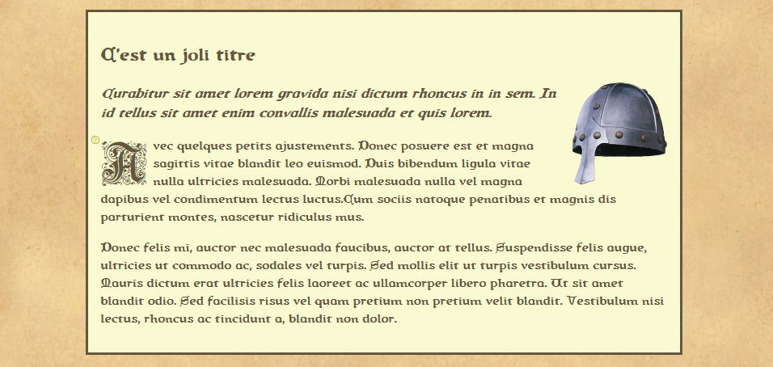
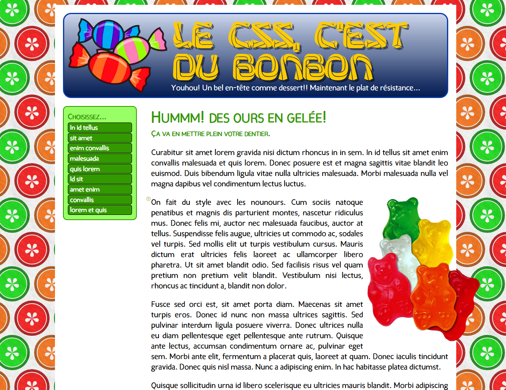

On ajoute du style
Préparation
- Récupérer le dossier compressé dustyle.zip et le décompresser.
- Ouvrir le dossier
dustyle dans Brackets.
Consignes
-

Exercice Le positionnement dans la page
- Visiter la page de l'exercice
- Ouvrir le fichier
casque.html dans Brackets.
- Ouvrir également le fichier dans le fureteur afin de visualiser les changements.
- Dans la balise ouvrante
body, ajouter l'attribut style avec la valeur suivante : font-family:queen_country;
background-image:url(images/papier.jpg);
- Tester la page.
- Dans la page de l'exercice, placer la souris sur certains éléments, et une bulle apparaîtra. La bulle contient les propriétés à ajouter à l'élément concerné.
- Appliquer les styles aux balises correspondantes dans fotre fichier.
- La plupart du temps, on doit copier et coller le style d'un élément vers le suivant.
- Parfois, on doit enlever une propriété. Elle est alors indiquée en rouge.
-

Exercice Le CSS, c'est du bonbon
- Visiter la page de l'exercice
- Ouvrir le fichier
bonbon.html dans Brackets.
- Ouvrir également le fichier dans le fureteur afin de visualiser les changements.
- Dans la balise ouvrante
body, ajouter l'attribut style avec la valeur suivante : background-image: url(images/agrumes.png);
font-family: candela;font-size: 20px;
- Tester la page.
- Dans la page de l'exercice, placer la souris sur certains éléments, et une bulle apparaîtra. La bulle contient les propriétés à ajouter à l'élément concerné.
- Appliquer les styles aux balises correspondantes dans fotre fichier.
- Parfois, on doit enlever une propriété. Elle est alors indiquée en rouge.